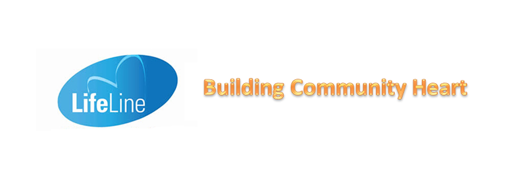

Child protection
Investigations, crisis intervention, foster care and counselling help respond when safety is at risk.
View servicesA clearer view of the work
This page replaces the old photo gallery with practical pathways into our services, partnerships and resources.
Service areas
Investigations, crisis intervention, foster care and counselling help respond when safety is at risk.
View servicesFamily reconstruction and counselling help people work towards safer, more supported relationships.
How we helpSchools, parents and local partners can connect with workshops, referrals and practical support.
Partner with usThe people behind the work
Our work is carried by social workers, educators, support staff, donors and community members who show up with care and practical knowledge.


Our partners
We are grateful to the organisations, funders and community members who help support our work.
